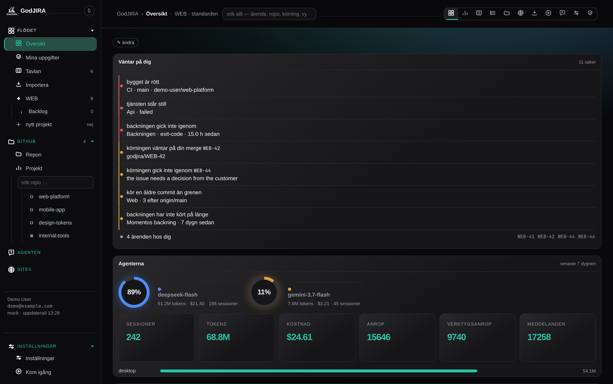
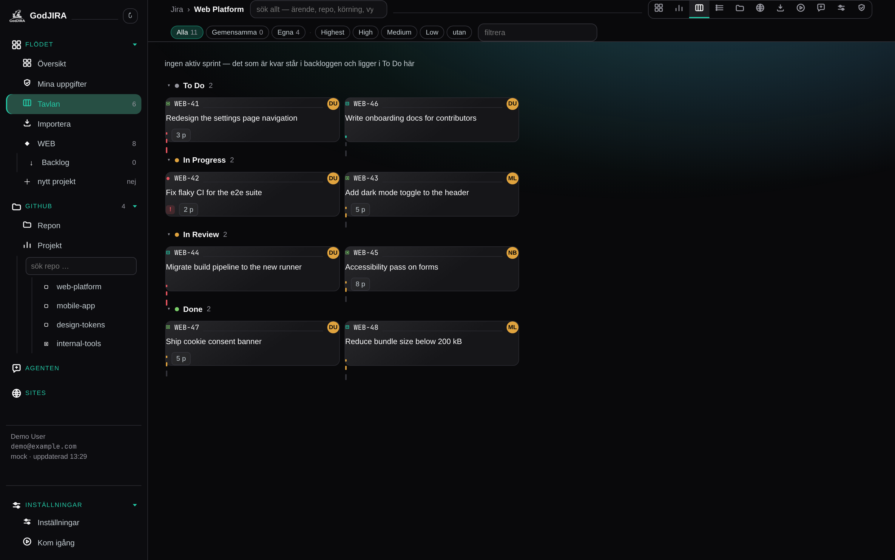
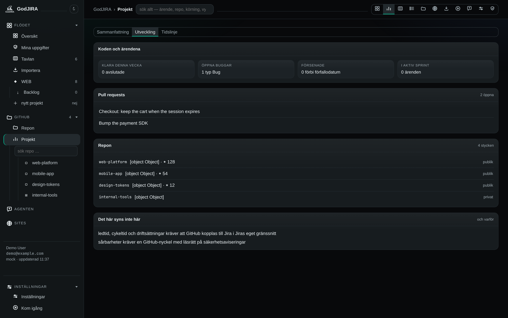
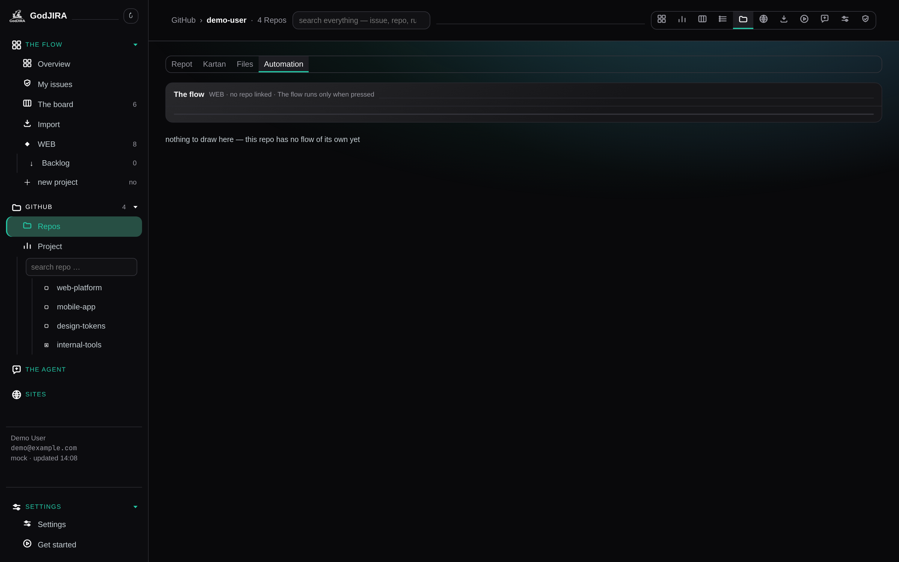
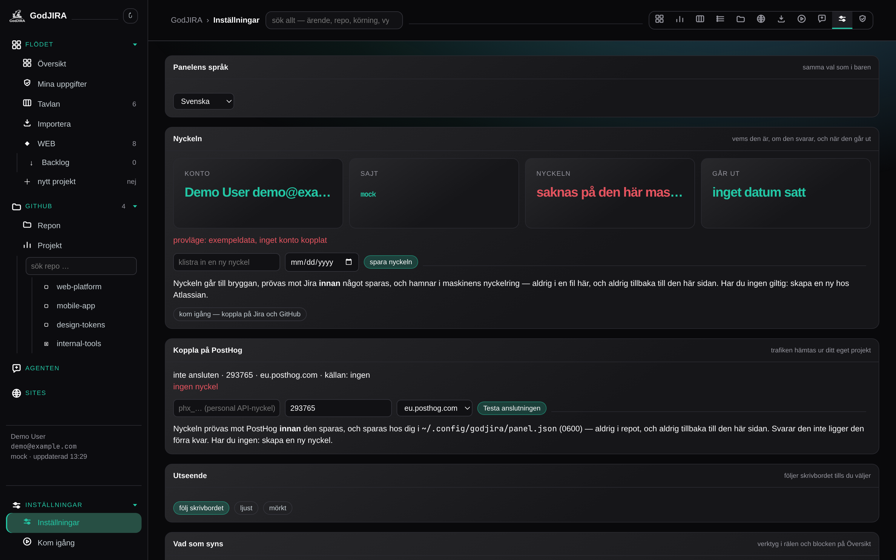

GodJIRA
GodJIRA
Jira-klienten i ditt skal — en egen app på din dator.
Din Jira-tavla, i stället för i en flik
GodJIRA är ett program du kör själv. Det visar ditt Jira-konto — tavlan med drag och släpp, backlog, tidslinje, rapporter, ärendelistan och kodkartan — med GitHub och n8n-flödet bredvid, och pratar nio språk. Ingenting ligger i molnet hos mig: appen körs på din dator, med din nyckel och din Jira-instans.

Prova först, koppla sedan
Appen startar på egen exempeldata. Du behöver inget Jira-konto, ingen nyckel och ingenting att ångra för att se om den passar dig:
git clone https://github.com/alexwest1981/GodJIRA.git ~/Projects/godjira
cd ~/Projects/godjira && python3 panel/server.pyÖppna http://127.0.0.1:8788. Tavlan, ärendelistan, rapporterna och
flödesritningen är levande på exempeldata, kontokortet säger mock, och ingenting
skrivs till Jira. När du vill koppla in ditt eget konto är Kom igång dörren:
en Jira-API-nyckel och gh auth login. Ingen nyckel, ingen nyckelringspost, ingen
fil i repot lämnas efter en titt.
Så funkar det
Panelen är programmet
En lokal webbserver utan beroenden — Python och ingenting mer. Du öppnar den i vilken webbläsare som helst, eller som ett eget fönster från menyn.
Panelvyn är en vy
Om du kör Omarchy finns ett tillägg i skalets list. Det visar samma panel — det är kärnan som är appen, vyn är bara en dörr in.
Nyckeln är din
Jira-nyckeln och GitHub-inloggningen ligger i din sessionsnyckelring: aldrig i en fil, aldrig i en logg, och aldrig skickad till webbläsaren.
Flödet är ditt
Har du n8n ritar panelen upp ditt eget flöde ur dess fil, och kan låta agenter ta ett ärende i en egen arbetskopia — med gren och pull request tillbaka.




Installera
För hela installationen — tjänsten, menykonen, fönsterregeln, panelvyn och flödet om du har n8n — kör du installationsskriptet i klonen:
cd ~/Projects/godjira && ./install.shDen skriver en systemdtjänst bunden till 127.0.0.1, en menykon, en regel som
gör fönstret flytande och centrerat, och — bara om skalet eller n8n redan finns — panelvyn och
flödet. Sist kontrollerar den att panelen svarar i stället för att säga att den är klar.
| Krav | Vad som gäller |
|---|---|
| Python | 3.9 eller nyare. Panelen använder bara standardbiblioteket — det finns inget att installera med pip. |
| Operativsystem | Testad i containrar på Debian stable, Ubuntu 22.04 och 24.04, Fedora, Alpine och Rocky 9. |
| Skrivbord | Valfritt. Panelvyn i skalets list kräver Omarchy (Arch och Quickshell); panelen själv fungerar var som helst. |
| Konton | Ett Jira Cloud-konto och, för GitHub-delarna, gh auth login. Båda är valfria för att titta. |
Vad du kan vänta dig
- En klient för ditt konto — jag har ingen server, inget abonnemang och ingen inloggning. Det finns ingenting att betala för och ingenstans att bli avstängd.
- Nio språk i både panelen och panelvyn; ett språkval, inte ett per webbläsare.
- Skrivskyddet är inbyggt: ingenting ändras i Jira utan att du först ser och godkänner det. Ett dokument kan läsas in och bli ärenden — men först när du säger ja.
- Appen stannar på din maskin. Vill du bli av med allt den sparat: ta bort
~/.config/jira-flow/och~/.local/state/jira-flow/, och nyckeln ur nyckelringen medsecret-tool clear service godjira account <din adress>. - Öppen källkod under AGPL-3.0. Läs koden, bygg vidare, eller strunta i den — men ett bygge som går vidare måste gå vidare på samma villkor, med källkoden öppen.
Länkar
- Källkoden och hela dokumentationen — README:n beskriver varje vy, varje kommando och var data ligger.
- AGPL-3.0 — och namnet, som inte följer med licensen.
- Integritet — vad den här sidan gör, och vad appen gör med dina uppgifter.
- Villkor.